Pop-Up Exhibition
May 2018
Web Design
Visual Design
Pamphlet Layout
User Testing
Blablab is a pop-up exhibition that sheds light on how we talk to the people close to us, and how to become better, more empathetic listeners. Inspired by our own lack of awareness in talking with others, Blablab's primary goal is to teach visitors how to be better support systems for their friends.
I worked with three other designers to create a series of final deliverables, including a set of activities for visitors to participate in, a website for marketing and documentation purposes, and the overall pop-up shop experience, which took place on May 2nd, 2018 on Carnegie Mellon's campus.
Process documentation can be found here on Medium.
To promote Blablab and provide information on the event, we designed a website for the exhibition which can be found here. After the event, the site became a means for visitors to look back on the event and allow for Blablab to live on in a digital form. The screenshots below are of the website before the event took place.
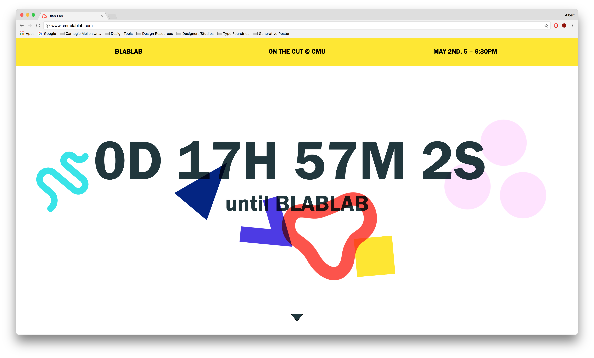
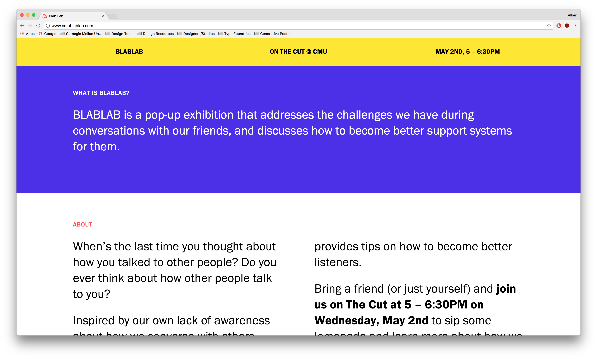
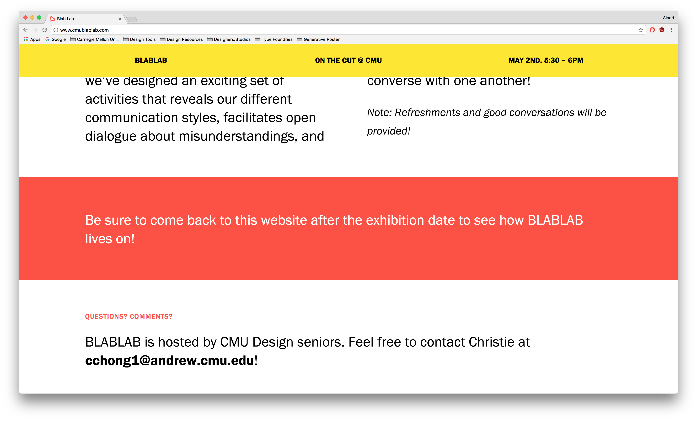
To shed light on how we talk with each other, we designed a set of five activities for visitors to partake in. These activities included a poll about conversational struggles, cards to figure out your own communication style, papers for drawing conversations, active listening tips, and self-reflection questions.
Some activities were integrated within a milk bottle vessel, which we used as a metaphor for friendly conversations and a souvenir for those who partook in the pop-up exhibition.
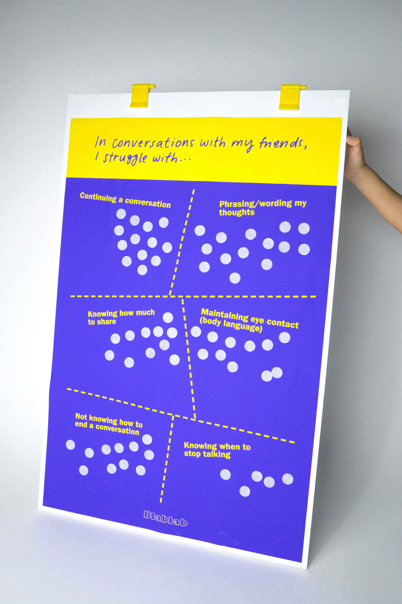
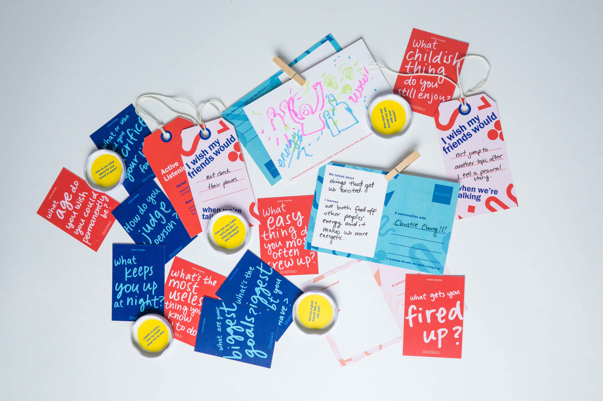
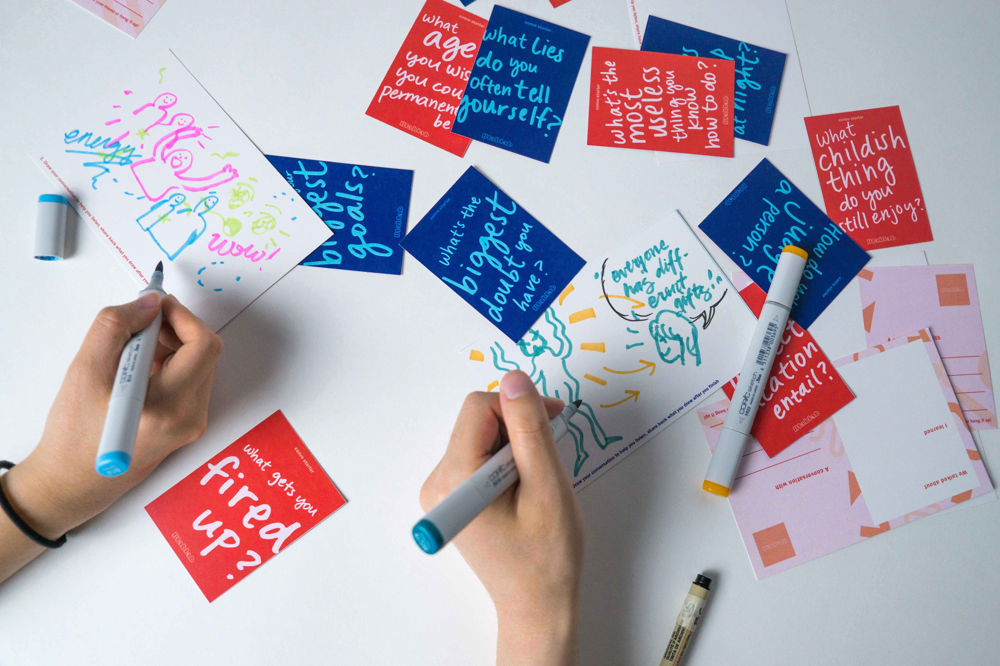
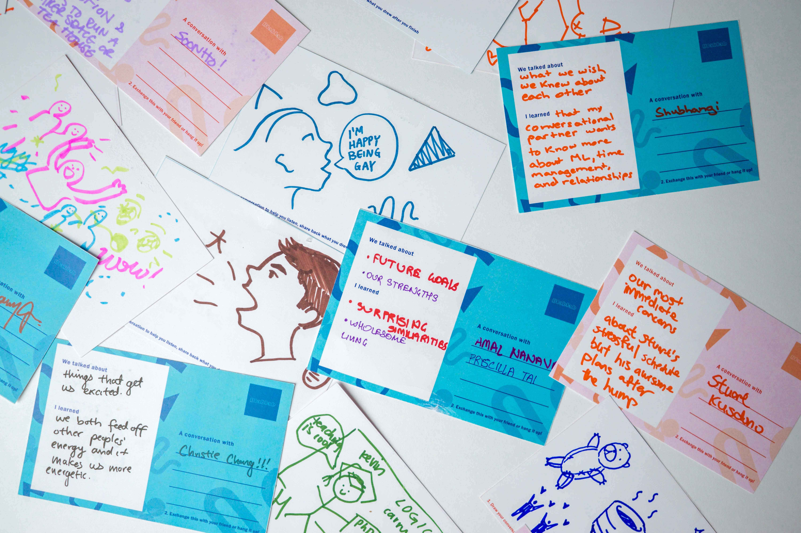
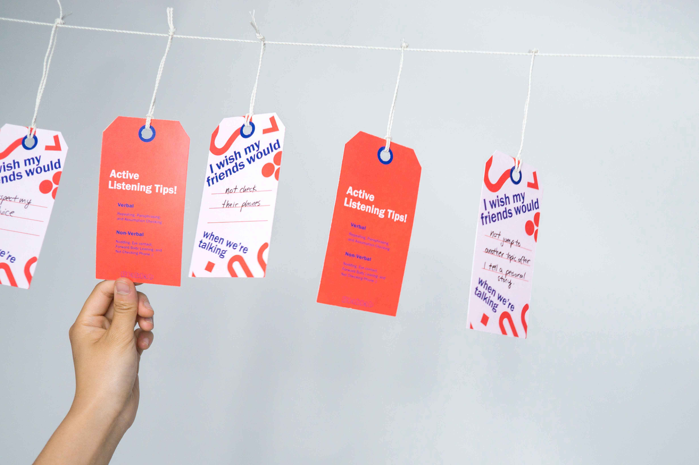
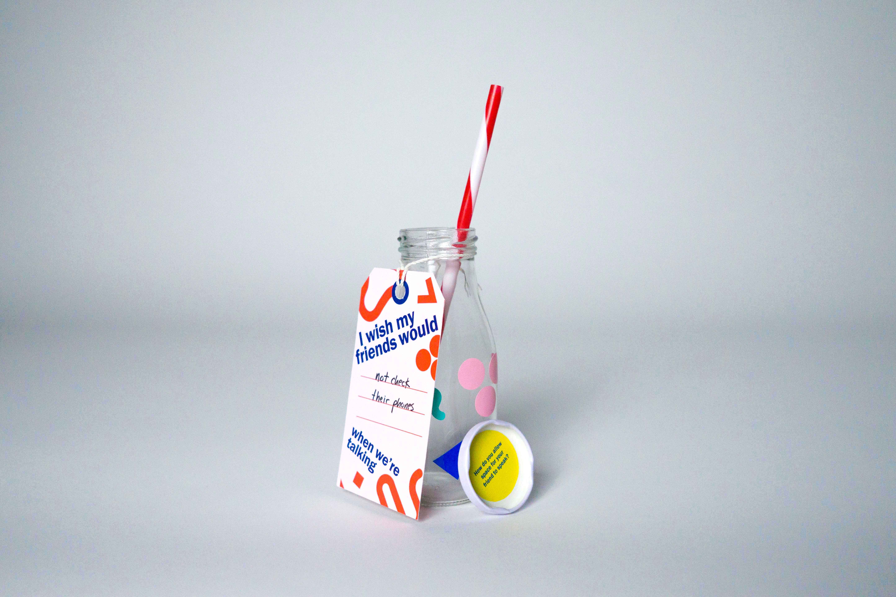
The event took place in the late afternoon on May 2 at CMU's main lawn. We had food and drinks for those to stop by, participate in some activities, and have good conversations with their friends! Visitors could take home a bottle decorated with their own communication styles, with a self-reflection question on the underside of the lid. They could also pin up their drawings and answers to a clothesline for other visitors to see!
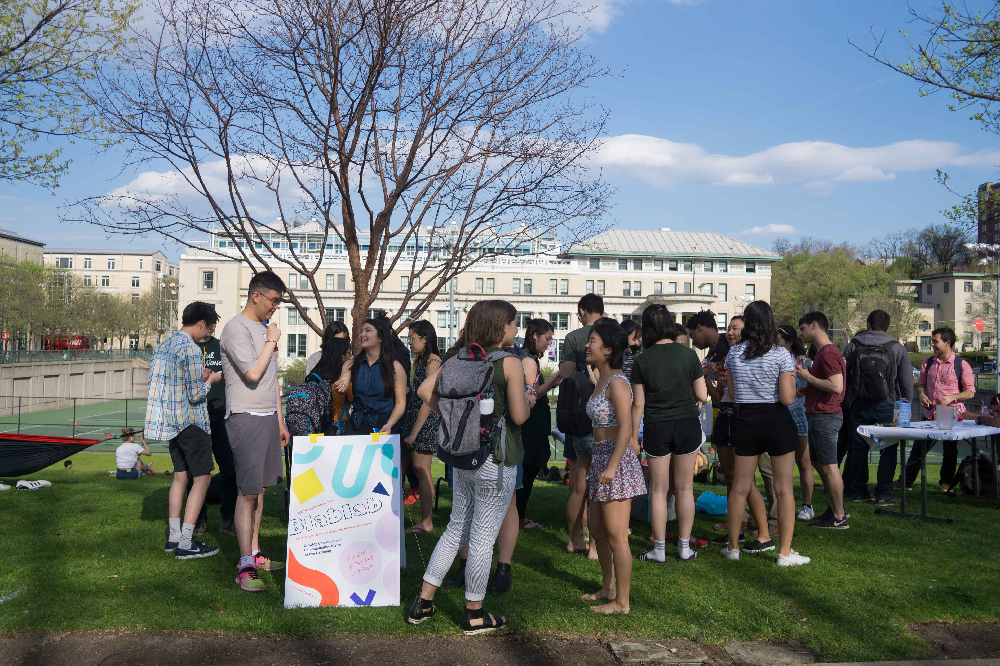
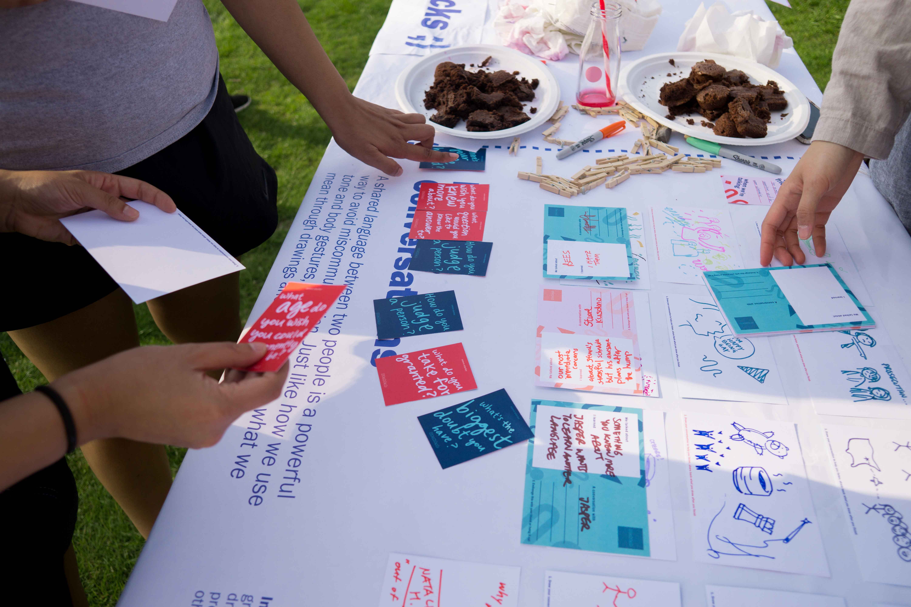
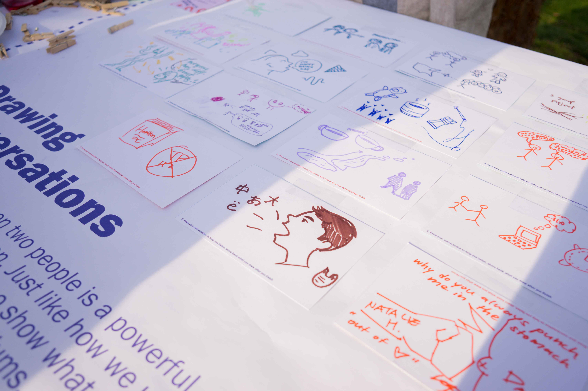
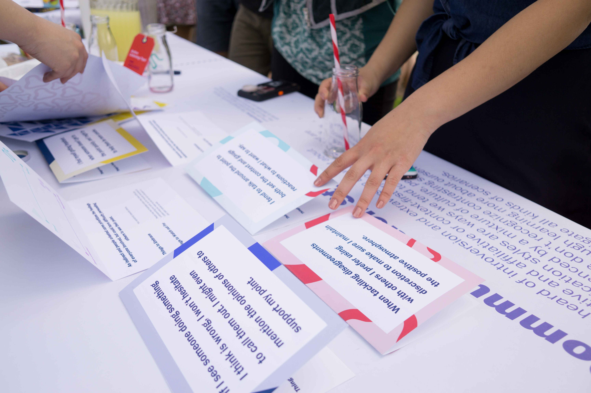
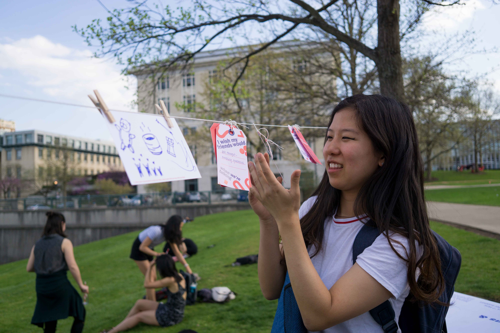
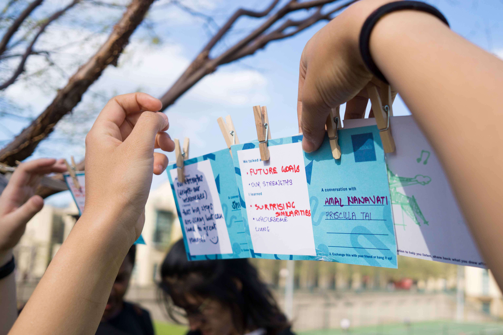
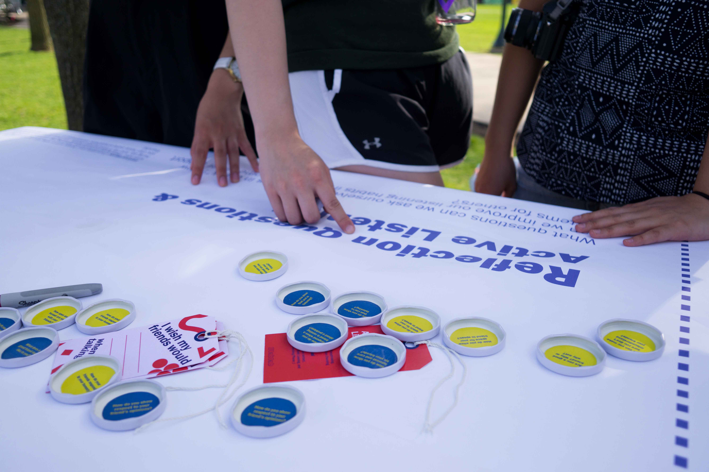
In-depth documentation of our journey can be found here!